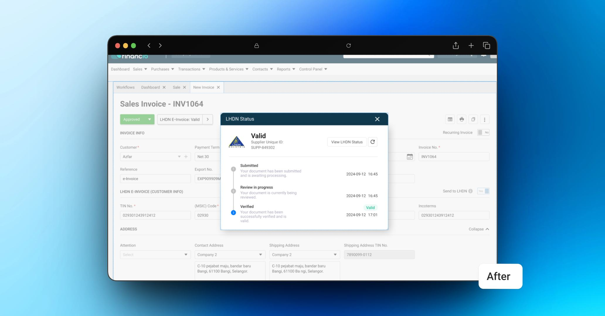
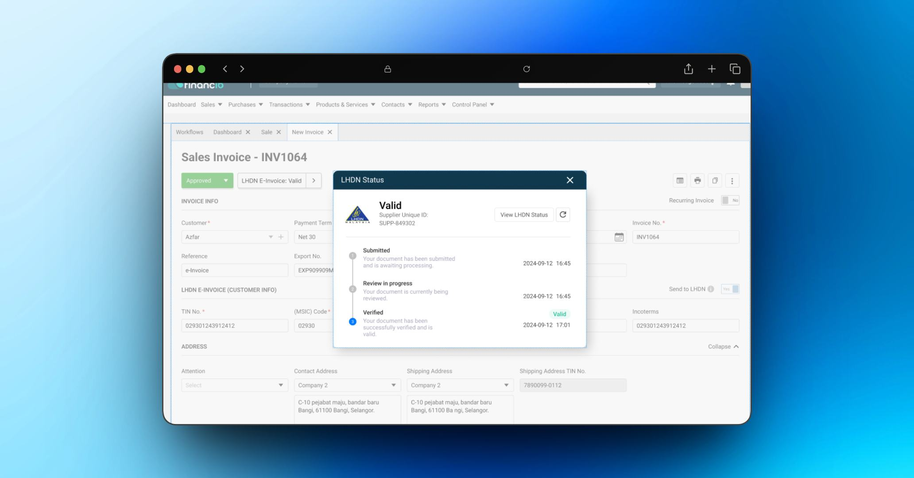
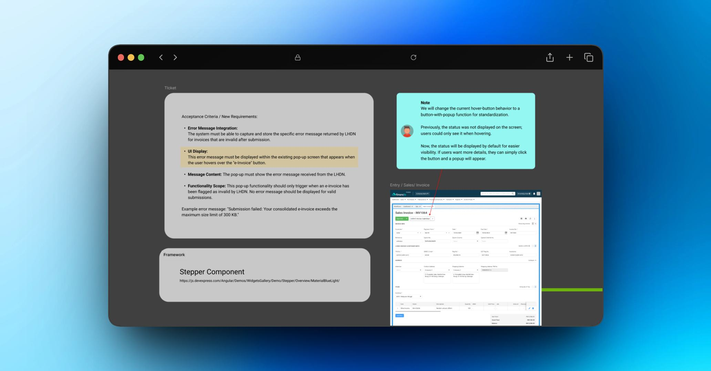

CASE 01 / FINANCIO
From hidden hover to actionable status.
Problem
The e-invoice status lived behind a hover pop-up — low visibility, no clarity, and no path to resolve an issue when something went wrong.
Approach
Mapped user behaviour around the status check to find where confusion and support dependency were coming from, then focused the redesign on visibility and actionability.
Solution
Replaced the hover with a modal built around a stepper — clear stage indicators including "In Progress," integrated error messaging, and the redundant QR code removed.
Impact
- Status became visible without guesswork
- Fewer support escalations for "is this invoice valid?"
- Errors are now actionable, not just visible


